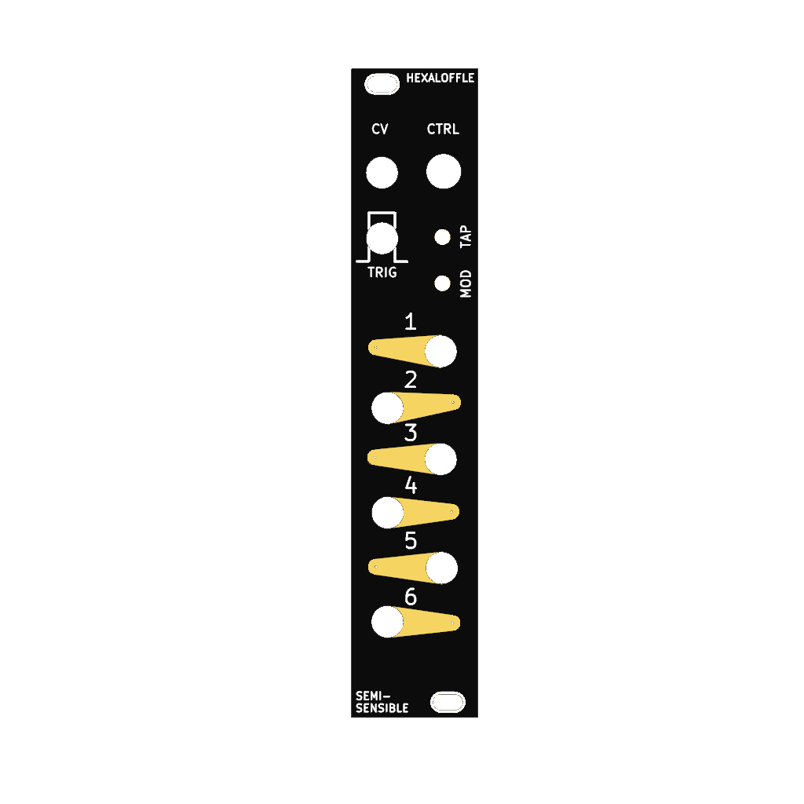

Hexaloffle
Hexaloffle
Hexaloffle: 6x tap tempo LFOs in 5HP
Overview
Hexaloffle provides six tap tempo LFOs, with configurable multipliers/dividers per channel and multiplier randomization via CV control.

| Width | 5HP (25 mm) |
| Depth | 43 mm |
| Peak current draw | 150mA (+12V), 10mA (-12V), 0mA (+5V) |
| Typical current draw | 100mA (+12V), 5mA (-12V), 0mA (+5V) |
| Alignment | Chaotic neutral |
Installation
Hexaloffle requires a -12V/+12V power supply (standard 2x5 pin Eurorack power connector), and draws ~100mA on the +12V rail under normal operation.
The module has reverse polarity protection on the power socket, but please don’t rely on it. Your module should have a notched box socket to prevent connecting the power cable in the wrong orientation. If your module is a hardware variation that does not have a notched box socket, ensure the red stripe on the power cable matches the ‘RED’ annotation on the PCB (when looking at the back of the module, with the power connector to the top, the red stripe on the ribbon cable [-12V] should be on the right).
Getting started
In the default mode, Hexaloffle acts as a clock synched modulation source. Press the TAP button at a steady tempo, or patch a constant clock or trigger signal into TRIG. Observe that the LEDs are cycling between red and yellow.
Patch one of the outputs 1-6 into another module in your system - try a filter cutoff input, VCO frequency input or other module where you can easily hear the result of a control voltage change. Enjoy having six synchronized LFOs !
Controls
The LFO rate follows the tempo of a clock at TRIG, or the tempo of TAP when tapped. The LFO is always a sine (or best digital effort).
TAPbutton (short taps): set tempo, LFO rateMODbutton (short press): select the output to edit- Output selection cycles through ‘all outputs’, then outputs 1 - 6 individually, then no outputs.
- The selected output flashes cyan
MODbutton (hold): edits the clock multiplier/divider for the currently select output(s)- Hold the
MODbutton, then turn theCTRLpotentiometer to modify the multiplier/divider for the selected output(s) - Selected outputs will briefly flash cyan when
MODis held. - Each output has its own multiplier. There is also a ‘global multiplier’. When ‘all outputs’ are selected, the global multiplier is modified (final output multiplier = channel multiplier * global multiplier)
- Hold the
CTRL- the potentiometer only makes changes whenMODis held.CVinput (0.0 ~ 5.8V): LFO frequency multiplier- As the input voltage to
CVincreases, so does the LFO frequency on all outputs - (Currently, the phase also changes as the
CVorCTRLvalue is changed. For the moment, let’s treat this as an interesting feature to be used creatively rather than a bug)
- As the input voltage to
Upon power-on, the initial channel multipliers give slow LFOs for the top outputs, and increasingly faster LFOs for the lower outputs.
Inputs and outputs
TRIG: A trigger or clock input to set the speed of the LFOs.CV: A 0 to 5.8V control voltage input that determines the maximum random multiplier (see above)Outputs 1 - 6(numbered sockets, from top to bottom):- Bipolor control voltage outputs, approximately -5 to +5V (or ~0 ~ 5V when the unipolar jumper is set).
- Each output is associated with an RGB LED that displays the amplitude of the output signal. Red is positive, yellow is negative and blue is close to zero. The LEDs flash other colours (green, cyan) to indicate output selection.
On the back of the module, setting the “UNIPOLAR” jumper changes the output range to 0 ~ 5 V.
Firmware updates
While holding the little white button on the Raspberry Pi Pico module, connect it via micro USB cable to your computer. The Raspberry Pi Pico should appear as a mounted drive, like a USB thumb drive. Drag / copy the hexaloffle-vXX.uf2 file onto the Raspberry Pi Pico - it should reboot automatically, and be running the new firmware.
It should be safe to do this while the Eurorack power is also connected and on (this is how I’ve always done firmware updates, via a USB hub), however I make no guarantees this won’t somehow damage your equipment. If you want to reduce the risk of damaging your computer / USB port / hub, please disconnect the Eurorack power first - the front panel lights won’t function under USB-only power, but the firmware updates work just the same.